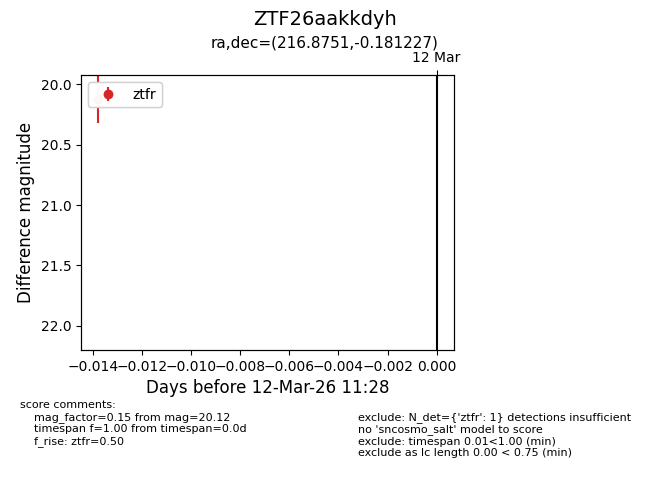
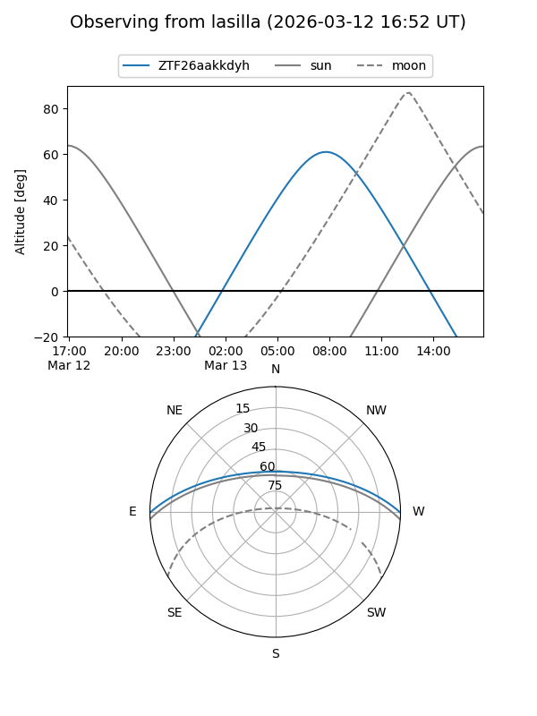
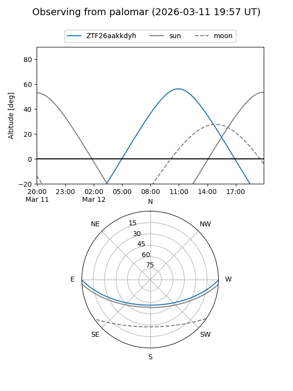

ZTF26aakkdyh
Target ZTF26aakkdyh at 2026-03-12 11:30
Aliases and brokers:
FINK: link
Lasair: link
ALeRCE: link
alt names
ZTF26aakkdyh (ztf,fink_ztf)
Coordinates:
equatorial (ra, dec) = 216.8751,-0.18123
equatorial (HMS+DMS) = 14:27:30.02,-00:10:52.42
galactic (l, b) = (347.0763,+54.24271)
Flags:
Photometry:
last ztfr=20.12
1 ztfr detections
Lightcurve

Visibility


Additional plots